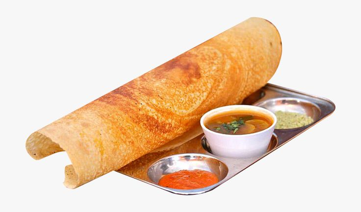

Dosa for the win

Description
Dosa is a south Indian Dish usually eaten with a variety of chutneys and curry. It is usually eaten for breakfast or for dinner in Indian households.
It is a very tasty dish and goes well with a variety of side dishes.
It is prepared my grinding rice and blackgram flour together and mixing it with water for a semi solid consistency. It is poured and cooked just like a pancake.
Ingredients
- Black gram
- Rice flour
- water
- salt
Steps
- Soak rice and black gram at 2:1 in water
- Wash the soaked mix to remove dust and any debris
- Grind the mix to a fine texture
- add some salt to balance the taste and leave it to fixate for 6-8 hours
- take a iron pan, apply some oil and pour the batter
- let it cook, carefully shift to a plate, serve with chutney/curry and enjoy